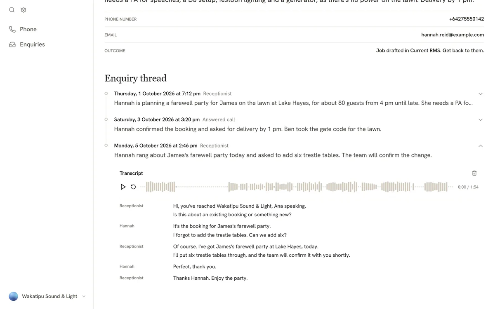
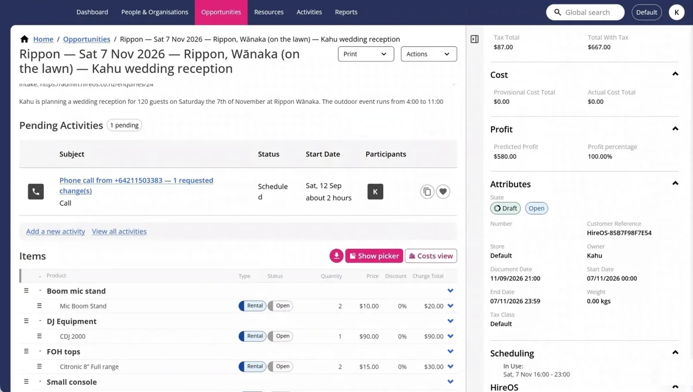

July 2026 to present. hireos.co.nz.
Every hire enquiry, in one place. One number for the whole team, every call and text in one app, synced to their rental system. Built and sold solo. Live at Accent Productions, The Rock Factory, Triac Light & Sound, Marquee Hire City, and NES Hire, with AV Media and Crown Events in the works.
Calls, texts and voicemails in one list, each under the customer.

Every call recorded and written up.

New jobs and changes synced to their rental system, waiting for the team to accept.

When the team is busy, the receptionist answers the call or text.